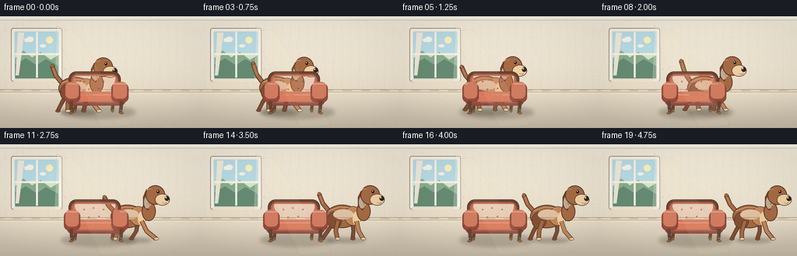
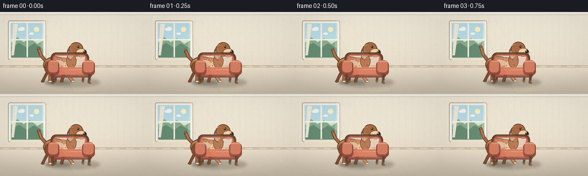
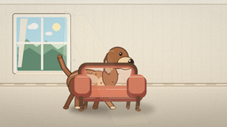
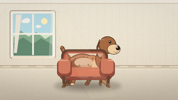
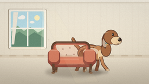
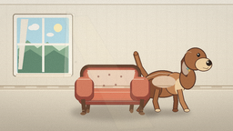
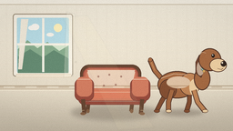
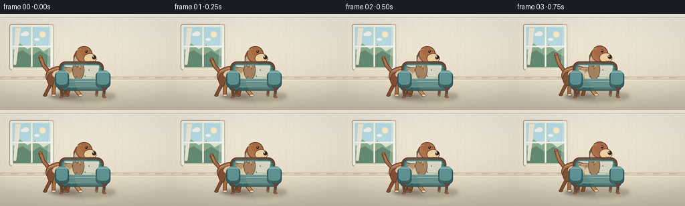

CODING AGENTS AS PIXEL WORLD MODELS
traex/DeepSeek-V4.1-Flash · dynamic_spatial_relationship_0005
点击播放 · 原生 RGB 像素
逐轮保存的候选
回放视频、检查图与代码变化。
每份候选均可单独播放。实际图片检查记录在下方工具轨迹中。
候选 01播放与检查图
点击播放 · 原生 RGB 像素

展开代码变化
--- 上一保存版本
+++ 本次保存版本
@@ -0,0 +1,530 @@
+from __future__ import annotations
+
+import math
+from pathlib import Path
+
+import numpy as np
+from PIL import Image, ImageDraw, ImageFilter
+
+import artifact_io
+
+
+W, H, FPS, FRAME_COUNT = 256, 144, 4, 20
+S = 4
+ROOT = Path(__file__).resolve().parent
+
+
+def color(value: str) -> tuple[int, int, int, int]:
+ value = value.lstrip("#")
+ return tuple(int(value[i : i + 2], 16) for i in (0, 2, 4)) + (255,)
+
+
+def box(x0: float, y0: float, x1: float, y1: float) -> tuple[int, int, int, int]:
+ return (round(x0 * S), round(y0 * S), round(x1 * S), round(y1 * S))
+
+
+def pt(x: float, y: float) -> tuple[int, int]:
+ return (round(x * S), round(y * S))
+
+
+def width(value: float) -> int:
+ return max(1, round(value * S))
+
+
+def ellipse(draw: ImageDraw.ImageDraw, bounds, fill=None, outline=None, line_width=1.0):
+ draw.ellipse(box(*bounds), fill=fill, outline=outline, width=width(line_width))
+
+
+def rounded(
+ draw: ImageDraw.ImageDraw,
+ bounds,
+ radius: float,
+ fill=None,
+ outline=None,
+ line_width=1.0,
+):
+ draw.rounded_rectangle(
+ box(*bounds),
+ radius=width(radius),
+ fill=fill,
+ outline=outline,
+ width=width(line_width),
+ )
+
+
+def polygon(draw: ImageDraw.ImageDraw, points, fill=None, outline=None, line_width=1.0):
+ scaled = [pt(x, y) for x, y in points]
+ draw.polygon(scaled, fill=fill)
+ if outline is not None:
+ draw.line(scaled + [scaled[0]], fill=outline, width=width(line_width), joint="curve")
+
+
+def line(draw: ImageDraw.ImageDraw, points, fill, line_width=1.0):
+ draw.line([pt(x, y) for x, y in points], fill=fill, width=width(line_width), joint="curve")
+
+
+def alpha_layer():
+ return Image.new("RGBA", (W * S, H * S), (0, 0, 0, 0))
+
+
+def composite(base: Image.Image, layer: Image.Image) -> Image.Image:
+ return Image.alpha_composite(base, layer)
+
+
+def vertical_gradient(top: tuple[int, int, int], bottom: tuple[int, int, int]) -> Image.Image:
+ y = np.linspace(0.0, 1.0, H * S, dtype=np.float32)[:, None, None]
+ top_arr = np.array(top, dtype=np.float32)[None, None, :]
+ bottom_arr = np.array(bottom, dtype=np.float32)[None, None, :]
+ pixels = top_arr * (1.0 - y) + bottom_arr * y
+ pixels = np.repeat(pixels, W * S, axis=1)
+ return Image.fromarray(np.clip(pixels, 0, 255).astype(np.uint8), "RGB").convert("RGBA")
+
+
+def draw_background() -> Image.Image:
+ base = vertical_gradient((244, 237, 221), (226, 214, 192))
+
+ # A quiet, faint wallpaper texture.
+ texture = alpha_layer()
+ td = ImageDraw.Draw(texture)
+ for x in range(7, W, 11):
+ td.line([pt(x, 5), pt(x, 97)], fill=(126, 103, 75, 12), width=width(0.45))
+ for y in range(10, 97, 13):
+ for x in range(10 + (y % 2) * 5, W, 11):
+ td.ellipse(box(x - 0.55, y - 0.55, x + 0.55, y + 0.55), fill=(255, 252, 242, 22))
+ base = composite(base, texture)
+
+ deco = alpha_layer()
+ d = ImageDraw.Draw(deco)
+
+ # Crown molding and a low chair rail.
+ d.rectangle(box(0, 0, W, 4), fill=color("#f8f2e5"))
+ line(d, [(0, 4.7), (W, 4.7)], color("#cbbda6"), 0.8)
+ d.rectangle(box(0, 94, W, 99), fill=color("#d8c9b1"))
+ line(d, [(0, 94.3), (W, 94.3)], color("#b5a286"), 1.0)
+ line(d, [(0, 99.1), (W, 99.1)], color("#f3e8d3"), 1.0)
+ for x in range(4, W, 24):
+ d.rectangle(box(x, 95.1, x + 12, 96.3), fill=(248, 237, 218, 90))
+
+ # Window and its soft outdoor view.
+ rounded(d, (14, 15, 80, 84), 3, fill=color("#f8f2e5"), outline=color("#9d8f79"), line_width=1.0)
+ rounded(d, (18.5, 19.5, 75.5, 79.5), 1.5, fill=color("#b9dce2"))
+ d.rectangle(box(19.5, 20, 75, 50), fill=color("#b8dce5"))
+ d.rectangle(box(19.5, 50, 75, 79), fill=color("#d6e6ce"))
+ polygon(d, [(19.5, 54), (30, 44), (41, 53), (52, 46), (65, 56), (75, 50), (75, 80), (19.5, 80)], fill=color("#89ad8e"))
+ polygon(d, [(19.5, 62), (33, 54), (47, 63), (59, 55), (75, 64), (75, 80), (19.5, 80)], fill=color("#668c73"))
+ ellipse(d, (59, 26, 68, 35), fill=color("#fff0bd"))
+ ellipse(d, (31, 28, 39, 33), fill=(255, 255, 255, 155))
+ ellipse(d, (34, 26, 43, 33), fill=(255, 255, 255, 145))
+ ellipse(d, (51, 36, 59, 40), fill=(255, 255, 255, 115))
+ # Glass reflections and muntins.
+ polygon(d, [(23, 21), (31, 21), (24, 76), (20, 76)], fill=(255, 255, 255, 28))
+ d.rectangle(box(46.2, 20, 48.4, 79), fill=color("#f8f2e5"))
+ d.rectangle(box(19, 47.4, 75.5, 49.7), fill=color("#f8f2e5"))
+ d.rectangle(box(17.5, 81, 78, 85), fill=color("#eadcc4"))
+ line(d, [(18, 83.2), (78, 83.2)], (255, 250, 237, 180), 0.8)
+
+ # Sheer curtain edge.
+ curtain = alpha_layer()
+ cd = ImageDraw.Draw(curtain)
+ polygon(cd, [(73, 13), (82, 15), (80, 84), (70, 85)], fill=(255, 249, 230, 72))
+ for x, shift in [(73, 0), (76, 1), (79, 0)]:
+ cd.line([pt(x, 17), pt(x + shift, 82)], fill=(255, 255, 246, 52), width=width(1.2))
+ curtain = curtain.filter(ImageFilter.GaussianBlur(width(0.35)))
+ deco = composite(deco, curtain)
+
+ # Framed landscape on the right wall.
+ rounded(d, (205, 18, 241, 51), 1.5, fill=color("#76523c"), outline=color("#553c30"), line_width=1.0)
+ rounded(d, (208, 21, 238, 48), 0.7, fill=color("#d9d6b8"))
+ d.rectangle(box(209, 22, 237, 33), fill=color("#a9c4bf"))
+ polygon(d, [(209, 34), (219, 27), (227, 35), (233, 30), (237, 33), (237, 47), (209, 47)], fill=color("#879e82"))
+ polygon(d, [(209, 39), (218, 34), (226, 41), (235, 36), (237, 39), (237, 47), (209, 47)], fill=color("#617b68"))
+ ellipse(d, (230, 24, 235, 29), fill=color("#f4d890"))
+ line(d, [(212, 45), (233, 45)], (248, 239, 211, 120), 0.7)
+
+ # Wood floor with perspective-friendly boards.
+ d.rectangle(box(0, 99, W, H), fill=color("#b98659"))
+ floor = np.linspace(0.0, 1.0, H * S, dtype=np.float32)[:, None]
+ floor_tint = np.zeros((H * S, W * S, 4), dtype=np.uint8)
+ yy = np.arange(H * S, dtype=np.float32)[:, None]
+ fade = np.clip((yy - 99 * S) / (H * S - 99 * S), 0.0, 1.0)
+ floor_tint[:, :, 0] = 16
+ floor_tint[:, :, 1] = 8
+ floor_tint[:, :, 2] = 0
+ floor_tint[:, :, 3] = (fade * 34).astype(np.uint8)
+ deco = composite(deco, Image.fromarray(floor_tint, "RGBA"))
+ board_color = (105, 66, 43, 72)
+ for y in [108, 119, 132]:
+ line(d, [(0, y), (W, y)], board_color, 0.55)
+ seams = [(11, 100, 24, 144), (58, 100, 76, 144), (107, 100, 128, 144), (161, 100, 183, 144), (217, 100, 238, 144)]
+ for x0, y0, x1, y1 in seams:
+ line(d, [(x0, y0), (x1, y1)], (101, 65, 45, 55), 0.55)
+ for i in range(14):
+ x = 12 + (i * 37) % 230
+ y = 105 + (i * 13) % 35
+ line(d, [(x, y), (x + 11, y + 0.4)], (242, 193, 139, 38), 0.45)
+
+ # Woven rug, built from layered rounded shapes.
+ rounded(d, (13, 111, 243, 141), 14.5, fill=color("#6f8a82"), outline=color("#536f69"), line_width=1.1)
+ rounded(d, (17, 114, 239, 138), 11.5, fill=color("#78958b"), outline=color("#d8c9a8"), line_width=0.8)
+ rounded(d, (22, 117, 234, 135), 9.0, fill=(111, 139, 128, 255), outline=(80, 111, 103, 90), line_width=0.45)
+ for x in range(31, 228, 20):
+ polygon(d, [(x, 126), (x + 5, 121), (x + 10, 126), (x + 5, 131)], fill=(216, 201, 169, 74))
+ d.ellipse(box(x + 4.4, 125.4, x + 5.6, 126.6), fill=(237, 224, 192, 92))
+ for x in range(23, 234, 7):
+ d.arc(box(x, 115.4, x + 7, 120), 190, 350, fill=(229, 216, 187, 42), width=width(0.4))
+ d.arc(box(x, 132, x + 7, 136.6), 10, 170, fill=(229, 216, 187, 38), width=width(0.4))
+
+ # Potted plant at far left.
+ d.line([pt(45, 110), pt(45, 80)], fill=color("#48684c"), width=width(1.2))
+ for x0, y0, x1, y1 in [
+ (45, 96, 31, 82),
+ (45, 98, 57, 84),
+ (45, 88, 34, 73),
+ (45, 90, 55, 76),
+ (45, 82, 43, 68),
+ ]:
+ line(d, [(x0, y0), (x1, y1)], color("#4d7050"), 0.9)
+ ellipse(d, (x1 - 5, y1 - 3, x1 + 5, y1 + 3), fill=color("#5d825a"), outline=color("#3e6548"), line_width=0.55)
+ line(d, [(x1 - 3, y1), (x1 + 3, y1)], (180, 204, 144, 95), 0.45)
+ polygon(d, [(32, 105), (59, 105), (55, 127), (36, 127)], fill=color("#b97850"), outline=color("#83533b"), line_width=0.8)
+ rounded(d, (31, 103, 60, 109), 2.2, fill=color("#ce8c61"), outline=color("#8b5940"), line_width=0.7)
+ polygon(d, [(37, 108), (55, 108), (53, 124), (39, 124)], fill=(228, 159, 112, 54))
+
+ # Chair floor shadow is part of the static scene.
+ shadow = alpha_layer()
+ sd = ImageDraw.Draw(shadow)
+ ellipse(sd, (78, 115, 174, 132), fill=(55, 42, 31, 62))
+ shadow = shadow.filter(ImageFilter.GaussianBlur(width(2.6)))
+ deco = composite(deco, shadow)
+
+ return composite(base, deco)
+
+
+def draw_chair() -> Image.Image:
+ layer = alpha_layer()
+ d = ImageDraw.Draw(layer)
+
+ wood_dark = color("#674632")
+ wood_mid = color("#866044")
+ fabric = color("#bd6751")
+ fabric_light = color("#d27d61")
+ fabric_dark = color("#984b3d")
+ seam = color("#824438")
+
+ # Rear legs.
+ for x in (98, 146):
+ line(d, [(x, 106), (x - 2, 122)], wood_dark, 4.2)
+ ellipse(d, (x - 3.2, 120, x + 0.2, 124), fill=wood_mid)
+
+ # Upholstered back, with a wooden rim.
+ rounded(d, (88, 71, 155, 113), 10, fill=wood_dark, outline=(82, 53, 39, 255), line_width=0.8)
+ rounded(d, (91, 74, 152, 109), 8, fill=fabric, outline=fabric_dark, line_width=0.9)
+ rounded(d, (94, 76.5, 149, 106), 6.5, fill=fabric_light)
+ polygon(d, [(96, 77), (148, 77), (144, 98), (102, 100)], fill=(230, 145, 113, 55))
+ line(d, [(96, 79), (102, 97), (144, 96), (148, 79)], (247, 174, 137, 78), 0.7)
+
+ # Subtle tufting and stitch marks.
+ for x, y in [(108, 84), (120, 82), (133, 84), (114, 94), (127, 93)]:
+ ellipse(d, (x - 1.1, y - 1.1, x + 1.1, y + 1.1), fill=(131, 68, 57, 160))
+ d.arc(box(x - 4, y - 2, x + 4, y + 2), 15, 165, fill=(239, 154, 118, 55), width=width(0.45))
+
+ # Seat cushion and front apron.
+ rounded(d, (86, 99, 161, 115), 6.5, fill=fabric_dark, outline=seam, line_width=0.8)
+ rounded(d, (88, 97, 159, 110), 5.2, fill=fabric_light)
+ rounded(d, (92, 99.5, 155, 108), 4, fill=(221, 123, 93, 255))
+ line(d, [(93, 101), (154, 101)], (246, 178, 143, 110), 0.55)
+ line(d, [(91, 111), (158, 111)], (111, 57, 47, 95), 0.55)
+
+ # Arms and rounded front posts.
+ rounded(d, (82, 86, 103, 111), 7, fill=fabric_dark, outline=seam, line_width=0.8)
+ rounded(d, (84, 84.5, 101, 106), 6, fill=fabric_light)
+ rounded(d, (143, 86, 165, 111), 7, fill=fabric_dark, outline=seam, line_width=0.8)
+ rounded(d, (145, 84.5, 163, 106), 6, fill=fabric_light)
+ line(d, [(85.5, 87), (99, 87)], (242, 167, 132, 120), 0.65)
+ line(d, [(146.5, 87), (161, 87)], (242, 167, 132, 120), 0.65)
+
+ # Front legs and tiny brass ferrules.
+ for x, top in [(91, 109), (156, 109)]:
+ line(d, [(x, top), (x + (1.5 if x < 120 else -1.5), 125)], wood_dark, 4.5)
+ ellipse(d, (x - 2.7, 123.2, x + 2.9, 126.2), fill=wood_mid)
+ line(d, [(x - 1.5, 121), (x + 1.4, 121)], (201, 156, 95, 95), 0.45)
+
+ return layer
+
+
+def draw_tail(d: ImageDraw.ImageDraw, cx: float, base_y: float, wag: float, outline, body, highlight):
+ base = (cx - 22, base_y - 34)
+ mid = (cx - 31, base_y - 45 + wag * 0.55)
+ tip = (cx - 36, base_y - 58 + wag * 1.5)
+ line(d, [base, mid, tip], outline, 6.0)
+ line(d, [base, mid, tip], body, 4.3)
+ line(d, [mid, tip], highlight, 1.1)
+ ellipse(d, (tip[0] - 2.3, tip[1] - 2.3, tip[0] + 2.3, tip[1] + 2.3), fill=body, outline=outline, line_width=0.6)
+
+
+def draw_leg(
+ d: ImageDraw.ImageDraw,
+ hip,
+ knee,
+ foot,
+ fur,
+ outline,
+ leg_width=4.1,
+ paw_color=None,
+):
+ line(d, [hip, knee, foot], outline, leg_width + 1.5)
+ line(d, [hip, knee, foot], fur, leg_width)
+ ellipse(
+ d,
+ (foot[0] - 3.0, foot[1] - 2.0, foot[0] + 3.5, foot[1] + 1.7),
+ fill=paw_color or fur,
+ outline=outline,
+ line_width=0.55,
+ )
+
+
+def draw_dog(cx: float, base_y: float, frame: int, run_amount: float, phase: float) -> Image.Image:
+ layer = alpha_layer()
+ d = ImageDraw.Draw(layer)
+
+ outline = color("#56372a")
+ fur = color("#a76b43")
+ fur_light = color("#c48859")
+ fur_dark = color("#855033")
+ cream = color("#efd0a3")
+ cream_light = color("#f8e1bc")
+ ear = color("#74452f")
+ collar = color("#3f776d")
+
+ bob = -1.9 * (0.5 + 0.5 * math.cos(phase * 2.0)) * run_amount
+ y = base_y + bob
+ stride = math.sin(phase) * 7.0 * run_amount
+ far_stride = math.sin(phase + math.pi) * 6.0 * run_amount
+ wag = math.sin(frame * 1.35) * (2.2 + 1.3 * run_amount)
+
+ # Far legs first, slightly darker to create depth.
+ draw_leg(
+ d,
+ (cx - 17, y - 22),
+ (cx - 24 + far_stride * 0.35, y - 10),
+ (cx - 29 + far_stride, y),
+ fur_dark,
+ outline,
+ 3.8,
+ )
+ draw_leg(
+ d,
+ (cx + 7, y - 22),
+ (cx + 7 - far_stride * 0.35, y - 10),
+ (cx + 4 - far_stride, y),
+ fur_dark,
+ outline,
+ 3.8,
+ )
+
+ # Tail, body, haunch, and chest.
+ draw_tail(d, cx, y, wag, outline, fur, fur_light)
+ ellipse(d, (cx - 28, y - 44, cx + 15, y - 14), fill=fur, outline=outline, line_width=1.0)
+ ellipse(d, (cx - 26, y - 35, cx - 7, y - 13), fill=fur_dark, outline=outline, line_width=0.7)
+ ellipse(d, (cx - 4, y - 42, cx + 19, y - 17), fill=fur_light, outline=outline, line_width=0.8)
+ ellipse(d, (cx - 18, y - 38, cx + 8, y - 25), fill=(209, 145, 98, 90))
+ ellipse(d, (cx + 7, y - 35, cx + 17, y - 17), fill=cream, outline=None)
+ line(d, [(cx - 24, y - 36), (cx - 10, y - 41), (cx + 4, y - 40)], (232, 172, 121, 90), 0.65)
+
+ # Near legs, with clear paws and a readable running cycle.
+ draw_leg(
+ d,
+ (cx - 12, y - 23),
+ (cx - 16 + stride * 0.35, y - 10),
+ (cx - 16 + stride, y),
+ fur,
+ outline,
+ 4.2,
+ cream,
+ )
+ draw_leg(
+ d,
+ (cx + 12, y - 23),
+ (cx + 16 - stride * 0.35, y - 10),
+ (cx + 24 - stride, y),
+ fur_light,
+ outline,
+ 4.2,
+ cream,
+ )
+
+ # Neck and floppy ear sit behind the head.
+ ellipse(d, (cx + 12, y - 48, cx + 30, y - 23), fill=fur, outline=outline, line_width=0.9)
+ ear_lift = math.sin(phase + 0.8) * 2.2 * run_amount
+ polygon(
+ d,
+ [
+ (cx + 18, y - 62 + ear_lift),
+ (cx + 14, y - 54),
+ (cx + 14, y - 42),
+ (cx + 20, y - 37),
+ (cx + 23, y - 46),
+ (cx + 23, y - 57 + ear_lift * 0.5),
+ ],
+ fill=ear,
+ outline=outline,
+ line_width=0.8,
+ )
+ ellipse(d, (cx + 15, y - 55, cx + 23, y - 39), fill=(143, 87, 57, 100))
+
+ # Head, muzzle, eye, and nose.
+ ellipse(d, (cx + 17, y - 69, cx + 42, y - 44), fill=fur, outline=outline, line_width=1.0)
+ ellipse(d, (cx + 29, y - 58, cx + 48, y - 43), fill=cream, outline=outline, line_width=0.8)
+ ellipse(d, (cx + 41.5, y - 55, cx + 47.5, y - 49), fill=color("#33261f"))
+ ellipse(d, (cx + 42.3, y - 54.1, cx + 44.1, y - 52.3), fill=(246, 225, 197, 170))
+ ellipse(d, (cx + 31.2, y - 63, cx + 34.8, y - 58.7), fill=color("#2b211c"))
+ ellipse(d, (cx + 32.1, y - 62.2, cx + 33.2, y - 61.0), fill=(255, 255, 245, 220))
+ line(d, [(cx + 38, y - 47), (cx + 42, y - 45.7), (cx + 44, y - 47)], outline, 0.55)
+ line(d, [(cx + 20, y - 47), (cx + 23, y - 44)], collar, 2.1)
+ line(d, [(cx + 20, y - 47), (cx + 23, y - 44)], (91, 135, 120, 70), 0.7)
+ ellipse(d, (cx + 21.4, y - 45.2, cx + 24.2, y - 42.5), fill=color("#d8ad62"), outline=color("#856338"), line_width=0.35)
+ line(d, [(cx + 18, y - 62), (cx + 21, y - 65), (cx + 25, y - 64)], (246, 205, 159, 110), 0.55)
+
+ return layer
+
+
+def dog_positions() -> list[float]:
+ return [
+ 103,
+ 103,
+ 103,
+ 105,
+ 110,
+ 117,
+ 125,
+ 134,
+ 143,
+ 152,
+ 161,
+ 170,
+ 178,
+ 185,
+ 190,
+ 194,
+ 197,
+ 199,
+ 201,
+ 201,
+ ]
+
+
+def run_amounts() -> list[float]:
+ return [
+ 0.0,
+ 0.0,
+ 0.05,
+ 0.35,
+ 0.78,
+ 1.0,
+ 1.0,
+ 1.0,
+ 1.0,
+ 1.0,
+ 1.0,
+ 0.98,
+ 0.92,
+ 0.78,
+ 0.58,
+ 0.35,
+ 0.16,
+ 0.04,
+ 0.0,
+ 0.0,
+ ]
+
+
+def dog_shadow(cx: float, base_y: float, run_amount: float) -> Image.Image:
+ layer = alpha_layer()
+ d = ImageDraw.Draw(layer)
+ stretch = 3.0 * run_amount
+ ellipse(
+ d,
+ (cx - 25 - stretch, base_y - 1.8, cx + 22 + stretch, base_y + 5.2),
+ fill=(54, 39, 29, 66),
+ )
+ return layer.filter(ImageFilter.GaussianBlur(width(2.0)))
+
+
+def dust_puffs(frame: int, cx: float, base_y: float) -> Image.Image:
+ if frame < 4 or frame > 14:
+ return alpha_layer()
+ layer = alpha_layer()
+ d = ImageDraw.Draw(layer)
+ strength = math.sin((frame - 3) / 12 * math.pi)
+ for i in range(3):
+ x = cx - 23 - i * 7 - (frame % 3) * 1.2
+ y = base_y - 2 - i * 1.5
+ radius = 1.4 + i * 0.6
+ ellipse(
+ d,
+ (x - radius, y - radius, x + radius, y + radius),
+ fill=(227, 205, 173, int(24 * strength)),
+ )
+ return layer.filter(ImageFilter.GaussianBlur(width(0.8)))
+
+
+def add_atmosphere(image: Image.Image) -> Image.Image:
+ layer = alpha_layer()
+ d = ImageDraw.Draw(layer)
+
+ # Warm diagonal window light, kept very soft.
+ polygon(
+ d,
+ [(69, 19), (96, 17), (169, 140), (130, 143)],
+ fill=(255, 240, 191, 18),
+ )
+ polygon(
+ d,
+ [(76, 20), (84, 20), (151, 139), (140, 140)],
+ fill=(255, 246, 210, 15),
+ )
+ for x, y, r in [(94, 41, 0.8), (117, 55, 0.6), (139, 76, 0.75), (83, 68, 0.55)]:
+ ellipse(d, (x - r, y - r, x + r, y + r), fill=(255, 249, 218, 72))
+ layer = layer.filter(ImageFilter.GaussianBlur(width(0.55)))
+ image = composite(image, layer)
+
+ # Gentle vignette and deterministic grain at final resolution.
+ small = image.convert("RGB").resize((W, H), Image.Resampling.LANCZOS)
+ arr = np.asarray(small, dtype=np.float32)
+ yy, xx = np.mgrid[0:H, 0:W]
+ nx = (xx - W / 2) / (W / 2)
+ ny = (yy - H / 2) / (H / 2)
+ vignette = 1.0 - 0.075 * np.clip(nx * nx * 0.55 + ny * ny * 0.85, 0.0, 1.0)
+ arr *= vignette[:, :, None]
+ rng = np.random.default_rng(1005)
+ grain = rng.normal(0.0, 1.15, (H, W, 1)).astype(np.float32)
+ arr = np.clip(arr + grain, 0, 255).astype(np.uint8)
+ return Image.fromarray(arr, "RGB")
+
+
+def render_frame(background: Image.Image, chair: Image.Image, frame: int) -> np.ndarray:
+ positions = dog_positions()
+ amounts = run_amounts()
+ cx = positions[frame]
+ amount = amounts[frame]
+ phase = (frame - 3) * (2.0 * math.pi / 4.7)
+ base_y = 122.0
+
+ image = composite(background, dog_shadow(cx, base_y, amount))
+ image = composite(image, dust_puffs(frame, cx, base_y))
+ image = composite(image, draw_dog(cx, base_y, frame, amount, phase))
+ image = composite(image, chair)
+ image = add_atmosphere(image)
+ return np.asarray(image, dtype=np.uint8)
+
+
+def main() -> None:
+ background = draw_background()
+ chair = draw_chair()
+ frames = np.stack([render_frame(background, chair, index) for index in range(FRAME_COUNT)])
+ artifact_io.save(frames, ROOT)
+ print(f"wrote {FRAME_COUNT} frames to {ROOT}")
+
+
+if __name__ == "__main__":
+ main()
候选 02播放与检查图
点击播放 · 原生 RGB 像素


展开代码变化
--- 上一保存版本
+++ 本次保存版本
@@ -206,10 +206,10 @@
wood_dark = color("#674632")
wood_mid = color("#866044")
- fabric = color("#bd6751")
- fabric_light = color("#d27d61")
- fabric_dark = color("#984b3d")
- seam = color("#824438")
+ fabric = color("#477a78")
+ fabric_light = color("#609391")
+ fabric_dark = color("#365f61")
+ seam = color("#294c50")
# Rear legs.
for x in (98, 146):
@@ -220,28 +220,28 @@
rounded(d, (88, 71, 155, 113), 10, fill=wood_dark, outline=(82, 53, 39, 255), line_width=0.8)
rounded(d, (91, 74, 152, 109), 8, fill=fabric, outline=fabric_dark, line_width=0.9)
rounded(d, (94, 76.5, 149, 106), 6.5, fill=fabric_light)
- polygon(d, [(96, 77), (148, 77), (144, 98), (102, 100)], fill=(230, 145, 113, 55))
- line(d, [(96, 79), (102, 97), (144, 96), (148, 79)], (247, 174, 137, 78), 0.7)
+ polygon(d, [(96, 77), (148, 77), (144, 98), (102, 100)], fill=(129, 175, 166, 52))
+ line(d, [(96, 79), (102, 97), (144, 96), (148, 79)], (172, 207, 194, 72), 0.7)
# Subtle tufting and stitch marks.
for x, y in [(108, 84), (120, 82), (133, 84), (114, 94), (127, 93)]:
- ellipse(d, (x - 1.1, y - 1.1, x + 1.1, y + 1.1), fill=(131, 68, 57, 160))
- d.arc(box(x - 4, y - 2, x + 4, y + 2), 15, 165, fill=(239, 154, 118, 55), width=width(0.45))
+ ellipse(d, (x - 1.1, y - 1.1, x + 1.1, y + 1.1), fill=(38, 76, 78, 150))
+ d.arc(box(x - 4, y - 2, x + 4, y + 2), 15, 165, fill=(150, 193, 180, 58), width=width(0.45))
# Seat cushion and front apron.
rounded(d, (86, 99, 161, 115), 6.5, fill=fabric_dark, outline=seam, line_width=0.8)
rounded(d, (88, 97, 159, 110), 5.2, fill=fabric_light)
- rounded(d, (92, 99.5, 155, 108), 4, fill=(221, 123, 93, 255))
- line(d, [(93, 101), (154, 101)], (246, 178, 143, 110), 0.55)
- line(d, [(91, 111), (158, 111)], (111, 57, 47, 95), 0.55)
+ rounded(d, (92, 99.5, 155, 108), 4, fill=(91, 139, 136, 255))
+ line(d, [(93, 101), (154, 101)], (173, 207, 193, 105), 0.55)
+ line(d, [(91, 111), (158, 111)], (31, 64, 66, 105), 0.55)
# Arms and rounded front posts.
rounded(d, (82, 86, 103, 111), 7, fill=fabric_dark, outline=seam, line_width=0.8)
rounded(d, (84, 84.5, 101, 106), 6, fill=fabric_light)
rounded(d, (143, 86, 165, 111), 7, fill=fabric_dark, outline=seam, line_width=0.8)
rounded(d, (145, 84.5, 163, 106), 6, fill=fabric_light)
- line(d, [(85.5, 87), (99, 87)], (242, 167, 132, 120), 0.65)
- line(d, [(146.5, 87), (161, 87)], (242, 167, 132, 120), 0.65)
+ line(d, [(85.5, 87), (99, 87)], (171, 204, 190, 105), 0.65)
+ line(d, [(146.5, 87), (161, 87)], (171, 204, 190, 105), 0.65)
# Front legs and tiny brass ferrules.
for x, top in [(91, 109), (156, 109)]:
候选 03播放与检查图
点击播放 · 原生 RGB 像素

展开代码变化
--- 上一保存版本
+++ 本次保存版本
@@ -354,47 +354,47 @@
)
# Neck and floppy ear sit behind the head.
- ellipse(d, (cx + 12, y - 48, cx + 30, y - 23), fill=fur, outline=outline, line_width=0.9)
+ ellipse(d, (cx + 12, y - 53, cx + 30, y - 23), fill=fur, outline=outline, line_width=0.9)
ear_lift = math.sin(phase + 0.8) * 2.2 * run_amount
polygon(
d,
[
- (cx + 18, y - 62 + ear_lift),
- (cx + 14, y - 54),
- (cx + 14, y - 42),
- (cx + 20, y - 37),
- (cx + 23, y - 46),
- (cx + 23, y - 57 + ear_lift * 0.5),
+ (cx + 18, y - 67 + ear_lift),
+ (cx + 14, y - 59),
+ (cx + 14, y - 47),
+ (cx + 20, y - 42),
+ (cx + 23, y - 51),
+ (cx + 23, y - 62 + ear_lift * 0.5),
],
fill=ear,
outline=outline,
line_width=0.8,
)
- ellipse(d, (cx + 15, y - 55, cx + 23, y - 39), fill=(143, 87, 57, 100))
+ ellipse(d, (cx + 15, y - 60, cx + 23, y - 44), fill=(143, 87, 57, 100))
# Head, muzzle, eye, and nose.
- ellipse(d, (cx + 17, y - 69, cx + 42, y - 44), fill=fur, outline=outline, line_width=1.0)
- ellipse(d, (cx + 29, y - 58, cx + 48, y - 43), fill=cream, outline=outline, line_width=0.8)
- ellipse(d, (cx + 41.5, y - 55, cx + 47.5, y - 49), fill=color("#33261f"))
- ellipse(d, (cx + 42.3, y - 54.1, cx + 44.1, y - 52.3), fill=(246, 225, 197, 170))
- ellipse(d, (cx + 31.2, y - 63, cx + 34.8, y - 58.7), fill=color("#2b211c"))
- ellipse(d, (cx + 32.1, y - 62.2, cx + 33.2, y - 61.0), fill=(255, 255, 245, 220))
- line(d, [(cx + 38, y - 47), (cx + 42, y - 45.7), (cx + 44, y - 47)], outline, 0.55)
+ ellipse(d, (cx + 17, y - 74, cx + 42, y - 49), fill=fur, outline=outline, line_width=1.0)
+ ellipse(d, (cx + 29, y - 63, cx + 48, y - 48), fill=cream, outline=outline, line_width=0.8)
+ ellipse(d, (cx + 41.5, y - 60, cx + 47.5, y - 54), fill=color("#33261f"))
+ ellipse(d, (cx + 42.3, y - 59.1, cx + 44.1, y - 57.3), fill=(246, 225, 197, 170))
+ ellipse(d, (cx + 31.2, y - 68, cx + 34.8, y - 63.7), fill=color("#2b211c"))
+ ellipse(d, (cx + 32.1, y - 67.2, cx + 33.2, y - 66.0), fill=(255, 255, 245, 220))
+ line(d, [(cx + 38, y - 52), (cx + 42, y - 50.7), (cx + 44, y - 52)], outline, 0.55)
line(d, [(cx + 20, y - 47), (cx + 23, y - 44)], collar, 2.1)
line(d, [(cx + 20, y - 47), (cx + 23, y - 44)], (91, 135, 120, 70), 0.7)
ellipse(d, (cx + 21.4, y - 45.2, cx + 24.2, y - 42.5), fill=color("#d8ad62"), outline=color("#856338"), line_width=0.35)
- line(d, [(cx + 18, y - 62), (cx + 21, y - 65), (cx + 25, y - 64)], (246, 205, 159, 110), 0.55)
+ line(d, [(cx + 18, y - 67), (cx + 21, y - 70), (cx + 25, y - 69)], (246, 205, 159, 110), 0.55)
return layer
def dog_positions() -> list[float]:
return [
- 103,
- 103,
- 103,
+ 96,
+ 96,
+ 97,
+ 99,
105,
- 110,
117,
125,
134,
候选 04播放与检查图
可观测工具轨迹
实际执行的命令与返回图片。
命令 1exit 0
/bin/bash -c "pwd && rg --files -g 'prompt.txt' -g 'GENERATION_RULES.md' -g 'task_spec.json' -g '"'!*.mp4'"' -g '"'!*.mov'"'"
命令 2exit 0
/bin/bash -c "find . -maxdepth 2 -type f -printf '%p\\n' | sort | head -200"
命令 3exit 0
/bin/bash -c 'ls -la'
命令 4exit 0
/bin/bash -c 'cat prompt.txt'
命令 5exit 0
/bin/bash -c 'cat GENERATION_RULES.md'
命令 6exit 0
/bin/bash -c 'cat task_spec.json'
命令 7exit 0
/bin/bash -c "sed -n '1,240p' artifact_io.py"
命令 8exit 0
/bin/bash -c "sed -n '1,220p' player_template.html"
命令 9exit 0
/bin/bash -c "python - <<'PY'
import importlib.util
for m in ['numpy','PIL','imageio','cv2','matplotlib']:
print(m, bool(importlib.util.find_spec(m)))
PY
ffmpeg -version | head -1 || true"命令 10exit 1
/bin/bash -c 'python generate.py'
命令 11exit 0
/bin/bash -c "rg -n 'line\\(["'^'"\\n]*fill=["'^'"\\n]*, [0-9.]+\\)' generate.py"
命令 12exit 1
/bin/bash -c 'python generate.py'
命令 13exit 0
/bin/bash -c "rg -n 'ellipse\\(["'^'"\\n]*width=' generate.py"
命令 14exit 0
/bin/bash -c 'python generate.py'
命令 15exit 0
/bin/bash -c 'python generate.py'
命令 16exit 0
/bin/bash -c "python - <<'PY'
from pathlib import Path
import json
import numpy as np
from PIL import Image
p=Path('.')
frames=np.load('pixels.npz')['pixels']
print('pixels', frames.shape, frames.dtype, 'unique_frames', len({f.tobytes() for f in frames}))
for i in [0,5,10,15,19]:
im=np.asarray(Image.open(f'frames/{i:02d}.png'))
print(i, im.shape, im.dtype, im.min(), im.max(), tuple(im.mean(axis=(0,1)).round(1)))
print('index', (p/'index.html').stat().st_size, 'inspection', (p/'inspection.png').stat().st_size)
print('artifacts', sorted(x.name for x in p.iterdir() if x.is_file()))
PY"命令 17exit 0
/bin/bash -c "python - <<'PY'
from pathlib import Path
import re
html=Path('index.html').read_text()
assert '__DATA__' not in html and '__ID__' not in html
assert 'const DATA=' in html and 'window.__pixelReady=true' in html
print('player HTML wired:', True)
PY"命令 18exit 1
/bin/bash -c "python - <<'PY'
from pathlib import Path
import numpy as np
from PIL import Image
arr=np.load('pixels.npz')['pixels']
frames=np.stack([((arr[:,:,i]>>16)&255).astype(np.uint8) for i in range(arr.shape[2])],axis=-1)
print('packed RGB tensor:', arr.shape, arr.dtype)
print('decoded frames:', frames.shape, frames.dtype)
assert frames.shape==(20,144,256,3) and frames.dtype==np.uint8
assert len(list(Path('frames').glob('*.png')))==20
assert all(np.asarray(Image.open(f'frames/{i:02d}.png')).shape==(144,256,3) for i in range(20))
print('all required frame artifacts valid')
PY"命令 19exit 0
/bin/bash -c "python - <<'PY'
from pathlib import Path
import numpy as np
from PIL import Image
arr=np.load('pixels.npz')['pixels']
frames=np.stack([((arr>>16)&255).astype(np.uint8), ((arr>>8)&255).astype(np.uint8), (arr&255).astype(np.uint8)],axis=-1).transpose(2,0,1,3)
print('packed RGB tensor:', arr.shape, arr.dtype)
print('decoded frames:', frames.shape, frames.dtype)
assert frames.shape==(20,144,256,3) and frames.dtype==np.uint8
assert len(list(Path('frames').glob('*.png')))==20
for i in range(20):
im=np.asarray(Image.open(f'frames/{i:02d}.png'))
assert im.shape==(144,256,3) and im.dtype==np.uint8
assert np.array_equal(im, frames[i])
print('all 20 frame PNGs match pixels.npz')
PY"命令 20exit 0
/bin/bash -c "python - <<'PY'
from pathlib import Path
import ast
p=Path('generate.py')
ast.parse(p.read_text())
print('generate.py parses and remains runnable')
print('output artifacts:', ', '.join(x for x in ['generate.py','frames/00.png..19.png','pixels.npz','index.html','inspection.png'] if (Path(x).exists() if '*' not in x and '..' not in x else True)))
PY"视觉工具实际返回图片 1

视觉工具实际返回图片 2

视觉工具实际返回图片 3

视觉工具实际返回图片 4

视觉工具实际返回图片 5

视觉工具实际返回图片 6

视觉工具实际返回图片 7

视觉工具实际返回图片 8

保存候选 4 份；完成命令 20 次；可验证图片返回 8 张。原始 API 响应与完整日志保留在本地。